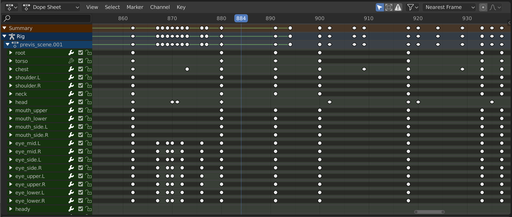
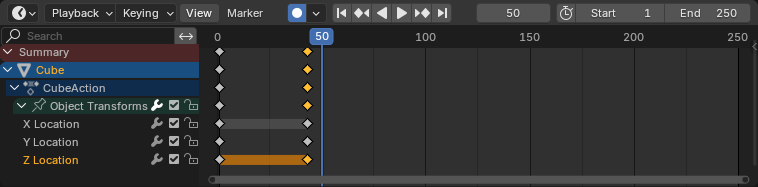
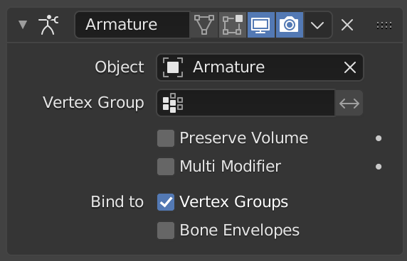

-
 Work Queue
Work Queue
-
My Ticket
Create a Ticket for your problem
Your Problem
Description
Attachment
Image files such as jpg, jpeg, png and svg etc...
Drop your image here or click to upload
Image files such as jpg, jpeg, png and svg etc...
Drop your image here or click to upload
00:15:00
What is the default frame rate in Blender for animations?
24 fps
30 fps
60 fps
15 fps
Which Blender editor is primarily used to animate objects?
Shader Editor
Timeline
UV Editor
Outliner
What does the shortcut "I" do in the 3D viewport?
Inserts a new object
Imports a file
Inserts a keyframe
Inverts selection
What is a keyframe in Blender?

A camera setting
A frame that contains animation data
A type of texture
A lighting preset
What panel allows you to control interpolation between keyframes?
Shader Editor
Graph Editor
UV Editor
Properties Panel
What does the Dope Sheet editor show?
Only camera movements
A list of all materials
Keyframes for multiple objects
Render settings
What is the purpose of the NLA (Non-Linear Animation) editor?
To edit textures
To manage complex animation strips
To bake lighting
To simulate physics
What does "Auto Keying" feature do?

Automatically saves your project
Automatically creates keyframes when changes are made
Automatically renders frames
Automatically names objects
Which axis is typically considered "up" in Blender?
X
Y
Z
W
What is the shortcut to play the animation in the Timeline?
Spacebar
Enter
Shift + A
Ctrl + P
What does "baking" an animation mean in Blender?
Exporting it as a video
Flattening the animation into keyframes
Applying a texture
Saving the project
What is the purpose of the Armature modifier?
To apply materials
To simulate gravity
To deform a mesh using bones
To add lighting effects
Which mode must you be in to animate bones?
Object Mode
Edit Mode
Pose Mode
Sculpt Mode
What is the function of the Timeline's "Start" and "End" values?
Set the render resolution
Define the animation playback range
Control the camera zoom
Adjust the light intensity
What is the purpose of the "Graph Editor"?

To edit materials
To adjust animation curves and interpolation
To manage render layers
To create particle systems
Need help?